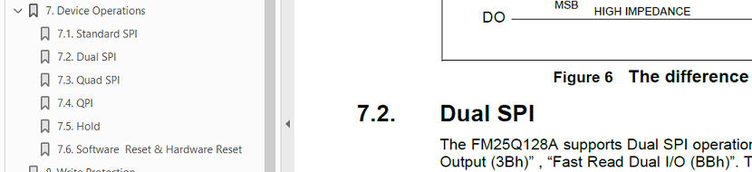

Linux 移植
SPI NOR 驱动 Linux 和 U-Boot 的驱动不一样，Linux 中驱动更复杂一些，本章阐述如何在 Linux 中进行 SPI NOR 器件的移植工作，以
Gigadevice 的 gd25q128 和
FudanMicro 的 FM25Q128 为例
-
移植一款 SPI NOR，最重要的是 JEDEC ID，通过在数据手册中查找 0x9F 命令获得
-
其他的参数都可以默认设置，INFO(0xa14017, 0, 64 * 1024, n_sectors, SECT_4K | SPI_NOR_DUAL_READ | SPI_NOR_QUAD_READ)
-
推荐使用标准 dts 进行 SPI NOR 的兼容
文件准备
相较于 SPI NAND 器件， SPI NOR 的接口更加标准，但为了统一管理的方便，还是会为某一个公司创建一个文件进行管理，如果该公司的文件已经存在，则直接添加新器件支持即可
- 在 source/linux-5.10/drivers/mtd/spi-nor/ 下建相应公司的标识的文件，如 fmsh.c cfx.c
- 在 Makefile 中添加该文件的编译： spi-nor-objs += fmsh.o
- 在 source/linux-5.10/drivers/mtd/spi-nor/core.h 中声明 extern const struct spi_nor_manufacturer spi_nor_fmsh;
驱动索引
内核中所支持的 SPI NOR 设备通过两级列表进行设置。
static const struct spi_nor_manufacturer *manufacturers[] = {
&spi_nor_atmel,
&spi_nor_catalyst,
&spi_nor_eon,
&spi_nor_esmt,
&spi_nor_everspin,
&spi_nor_fujitsu,
&spi_nor_gigadevice,
&spi_nor_intel,
&spi_nor_issi,
&spi_nor_macronix,
&spi_nor_micron,
&spi_nor_st,
&spi_nor_spansion,
&spi_nor_sst,
&spi_nor_winbond,
&spi_nor_xilinx,
&spi_nor_xmc,
&spi_nor_boya,
};再检查具体的设备厂商文件，具体的型号是否在列表之中（ 以 gigadevice 为例）:
static const struct flash_info gigadevice_parts[] = {
......
{ "gd25q128", INFO(0xc84018, 0, 64 * 1024, 256,
SECT_4K | SPI_NOR_DUAL_READ | SPI_NOR_QUAD_READ |
SPI_NOR_HAS_LOCK | SPI_NOR_HAS_TB) },
......
};此处检查，需要查找新设备的 Datasheet，找到该设备的 Manufacture 和 Device ID，并查看该 ID 是否出现在列表中。 例如此处为
0xc84018 ，其中 Manufacture ID = 0xc8, Device ID
ID[15~8] = 0x40, Device ID[7~0] = 0x18 。
spi_nor_manufacturer
该结构为第一级索引，用来描述器件厂家的信息
const struct spi_nor_manufacturer spi_nor_fmsh = {
.name = "FudanMicro", //厂家名字标识
.parts = fmsh_parts, //本驱动支持的器件
.nparts = ARRAY_SIZE(fmsh_parts), //支持的器件的个数
};flash_info
struct flash_info {
char *name; //器件名称，一般用器件编号替代
u8 id[SPI_NOR_MAX_ID_LEN]; //JEDEC 授权的器件 ID
u8 id_len; //ID 长度，填 0，自动计算
unsigned sector_size; //sector size，现在的意义已经改变
u16 n_sectors; //sector 数目，通过 flash size 和 sector size 计算出来
u16 page_size; //页大小， INFO 宏固定为 256
u16 addr_width; //board.dts 中配置
u32 flags; //功能标识- JEDEC ID：和 SPI NAND 不同， SPI NOR 的 ID 包含 Manufacture ID 和
Device ID 等多项内容，一般为 24 位，描述方式为
阈值 名称 示例 标记方式 MID7 - IDF0 Maunfacture ID 0xa1 JEDEC 分配 D15 - D8 Memory Type 0x40 0x9F 命令 D7 - D0 Memory Desity 0x17 0x9F 命令 不同厂家在数据手册中描述方法不一样，但现代的 SPI NOR 的 MID 一般通过 “Maunfacture/MID” 等字段标注，Device ID 的（D15 - D0） 一般通过 0x9F 命令标注， 因此在数据手册中通过搜索 9F 一般能构造出 JEDEC ID， 如下图所示
- 0xC84018

- 0xC22018

- 0xA14017

- 0xC84018
- sector_size：Sector Size 是个历史产物，不管是文件系统还是厂家的器件规格都开始对外提供基于
Block 的接口，但在名称上还保留了 Sector 的名称，而驱动中则已经完全切换到 Block 的逻辑
Sector Size 主要定义的是擦除参数，一般的器件提供三种擦除操作
操作方式 命令 擦除大小 备注 Sector Erase( SE) 0x20 4K 基础能力，主要做兼容，不做主力 32K Block Erase (BE) 0x52 32K 不再使用，和 BE-64 成对 64K Block Erase (BE) 0xD8 64K 大部分都支持，如果不支持则必须支持 SE 在驱动中，Sector_Size 描述的实际是 BE-64 的参数，而 BE-64 要求的 size 又是固定的 64K，因此该参数的设置原则是：
- 在数据手册中，如果支持 64K Block Erase (0xD8）命令，则设置为 ‘64 * 1024’
- 在数据手册中, 如果不支持 64K Block Erase (0xD8）命令，则设置为 ‘4 * 1024’

- n_sectors：Sector (Block) 数目通过计算得到， 计算公式为 (（flash size）/
sector size)，需要注意不同参数使用 Byte（B） 还是 bit（b） 描述
-
gd25q128： 128Mb / 64KB = 256
-
FM25Q128: 128Mb / 64KB = 256
-
FM25Q64: 64Mb / 64KB = 128
-
- flags：设置额外的功能标志。
- SECT_4K 建议均设置，此功能用来兼容 Sector Erase( SE) 的支持，在一些特殊情况下可以继续工作
- 如果支持 0xBB 命令，则打开 SPI_NOR_DUAL_READ
- 如果支持 0xEB 命令，则打开 SPI_NOR_QUAD_READ
- 如果有 Status Register，则打开 USE_FSR，是一种状态呈现，非必须

id_table
static struct spi_mem_driver spi_nor_driver = {
.spidrv = {
.driver = {
.name = "spi-nor",
.of_match_table = spi_nor_of_table,
},
.id_table = spi_nor_dev_ids,
},
static const struct spi_device_id spi_nor_dev_ids[] = {
/*
* Entries not used in DTs that should be safe to drop after replacing
* them with "spi-nor" in platform data.
*/
{"s25sl064a"}, {"w25x16"}, {"m25p10"}, {"m25px64"},
/*
* Entries that were used in DTs without "jedec,spi-nor" fallback and
* should be kept for backward compatibility.
*/
{"at25df321a"}, {"at25df641"}, {"at26df081a"},
{"mx25l4005a"}, {"mx25l1606e"}, {"mx25l6405d"}, {"mx25l12805d"},
{"mx25l25635e"},{"mx66l51235l"},
{"n25q064"}, {"n25q128a11"}, {"n25q128a13"}, {"n25q512a"},
{"s25fl256s1"}, {"s25fl512s"}, {"s25sl12801"}, {"s25fl008k"},
{"s25fl064k"},